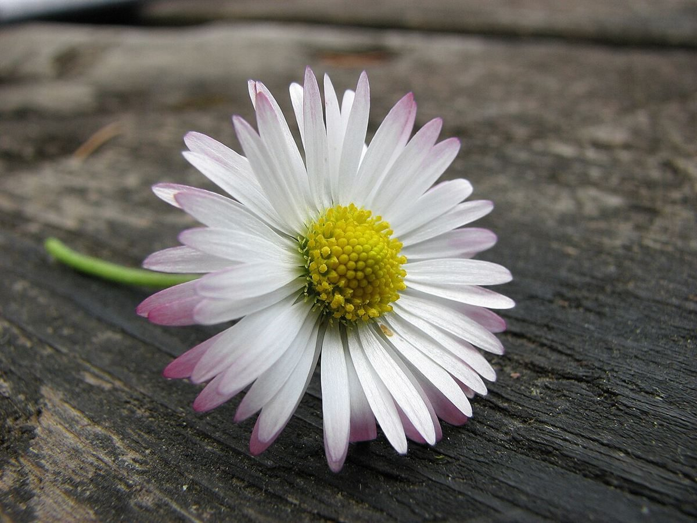
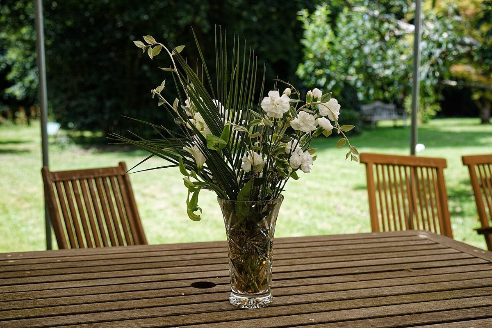

口コミ
声こんなお店かもしれない
カフェという業種から自然に想像できる声を、制作側が創作したものです。
以下は制作側が考えた創作のイメージ例で、実在のお客様の投稿ではありません。実際の口コミ・評価とは関係ありません。
窓から光が入るテーブルで、温かい飲み物をゆっくり飲む。そんな静かな時間を過ごせそうなお店です。
友人と二人で、近況を話しながらのんびり過ごせそうな場所です。席に小さな花があったら素敵だなと思います。
本を開いて、飲み物を片手に長居してしまいそうな居心地のよさを感じます。

